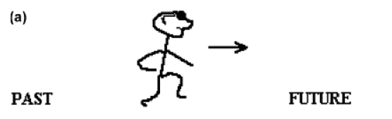

'Ego' here, simply means self.
Since time is an abstract concept, we tend to use metaphors to talk about it.
Interestingly, even though time does not actually exist in space, all human languages seem to organize time as if it exists as motion along some spatial continuum, front to back, top to bottom, left to right, east to west, etc.
Based on your answer to our question, you think in ego moving terms. This means that you see yourself as moving through time, as through a landscape.
he other predominant way of thinking about time is in time moving terms. People who think this way see time as moving past them, like the flow of a river.
This experiment was designed to see whether more people have a strong preference for one way of thinking or another. Check out our results page to see if this is the case.
You are moving through time, like you would move through space